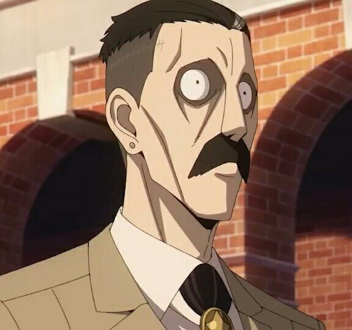
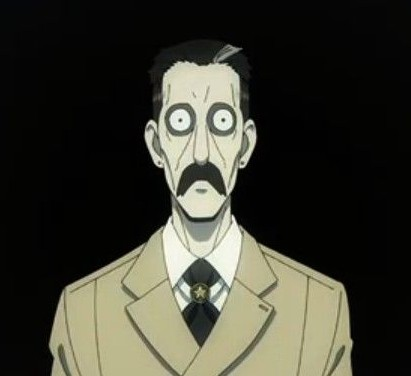
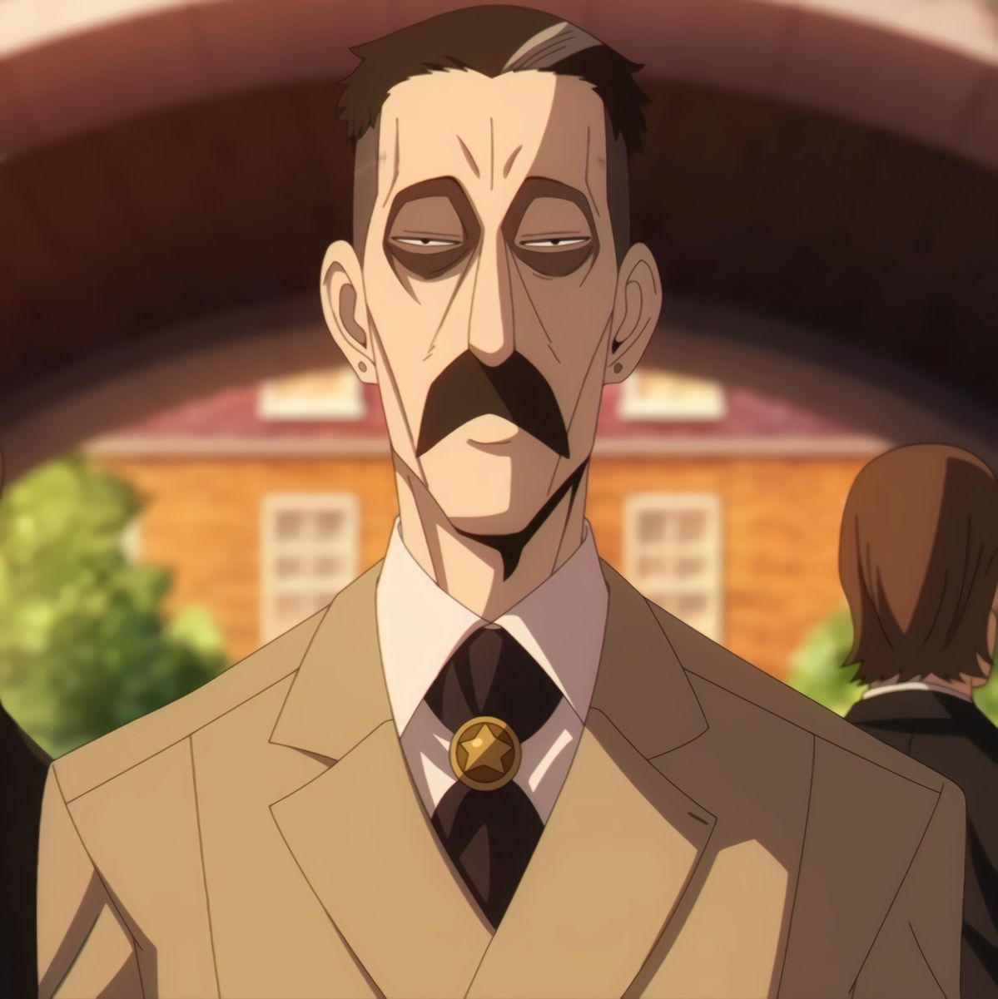
He is the primary antagonist and the ultimate target of "Operation Strix" in Spy x Family. As the Chairman of the National Unity Party in Ostania, he is the shadowy figure Loid Forger must approach to maintain peace between the East and the West. Donovan is defined by his extreme reclusiveness and cold demeanor. He rarely appears in public, making the Eden Academy social gatherings one of the few places he can be reached. He holds a deeply cynical view of human nature, believing that people can never truly understand one another. This philosophy makes him a difficult target for psychological manipulation. Donovan is Loid Forger's "Final Boss" because he is unpredictable. Unlike typical targets who can be swayed by charm or logic, Donovan's lack of attachment to others makes him nearly impossible to read. Every brief encounter Loid has with him is a high-tension chess match where one wrong word could end the mission.
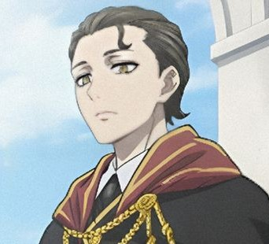
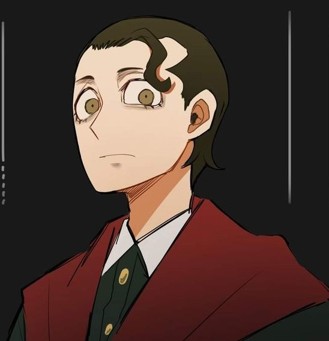
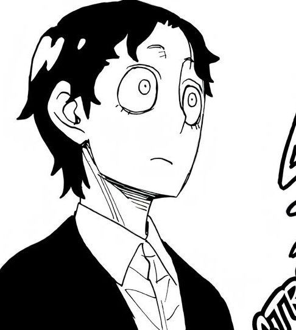
He is the eldest son of Donovan and Melinda Desmond and the older brother of Damian. Like his father, he is a figure of immense mystery and significant importance to the success of Operation Strix. Demetrius is the gold standard for students at Eden Academy. He is an Imperial Scholar, having earned several Stella Stars for his peerless academic performance. He shares his father's unsettling physical traits, including a wide-eyed, vacant stare. He is described as cold, distant, and seemingly "dead inside". Demetrius is characterized by a haunting emotional void. Demetrius represents the "perfected" version of the Desmond family ideals: academically brilliant, socially detached, and seemingly devoid of any vulnerabilities that Loid Forger could exploit. He remains one of the most enigmatic obstacles for WISE, as his lack of emotional "surface area" makes him nearly impossible to manipulate or read.
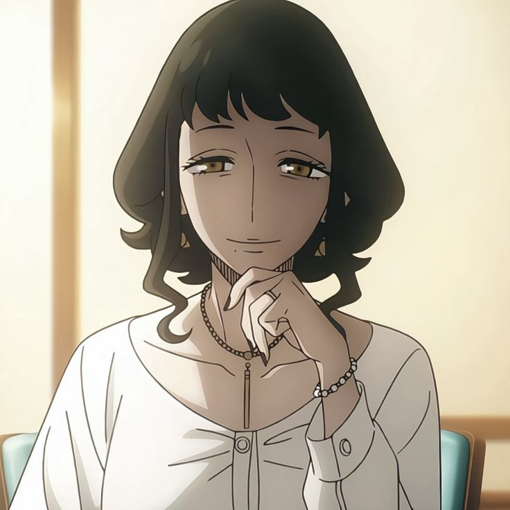
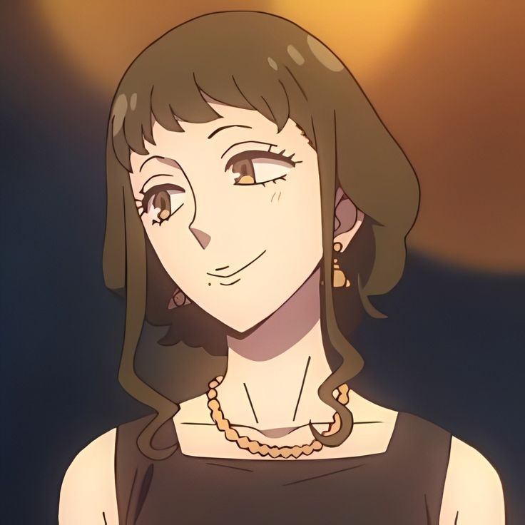
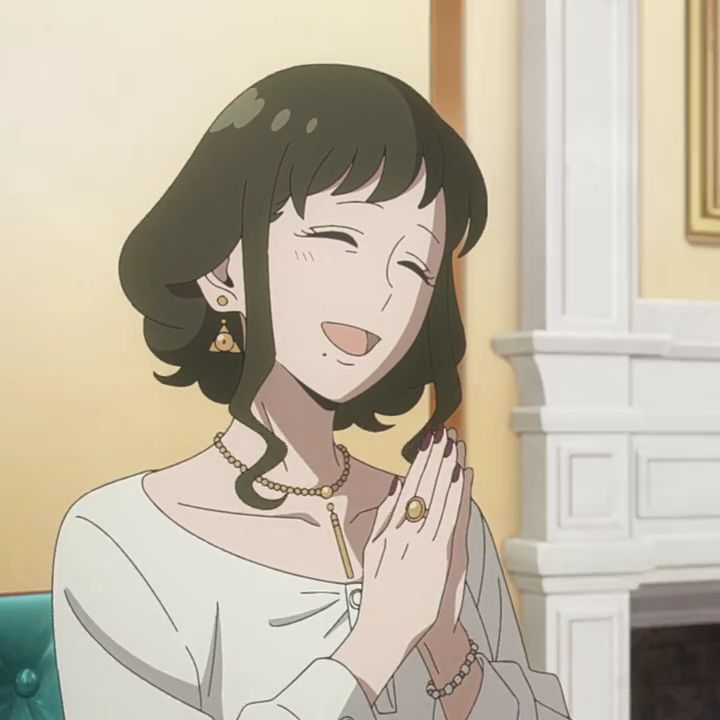
She is perhaps the most psychologically complex character in Spy x Family. As the wife of Donovan Desmond and mother to Demetrius and Damian, she represents a stark, unsettling contrast to the "wholesome" (if chaotic) energy of Yor Forger. Melinda is defined by an extreme, almost frightening ambivalence. She appears to suffer from a profound internal conflict regarding her family, particularly her youngest son, Damian. Unlike her reclusive husband, Melinda is socially active. She is the leader of the Lady Patriots Society, an elite circle of mothers of Eden Academy students. Melinda represents a secondary route to Donovan. While Loid is focused on the "Friendship Scheme" between Damian and Anya, Yor's organic friendship with Melinda has opened a direct door into the Desmond household—one that is arguably more stable but much more dangerous, given Melinda's unpredictable mental state.
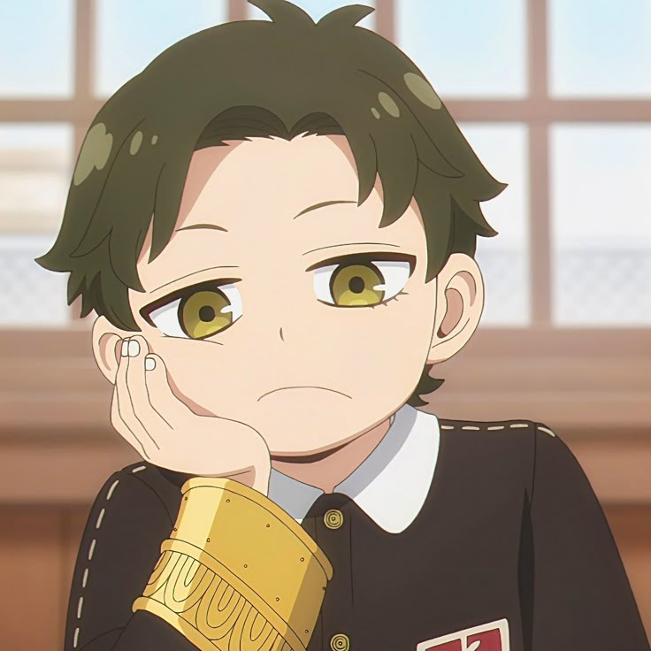
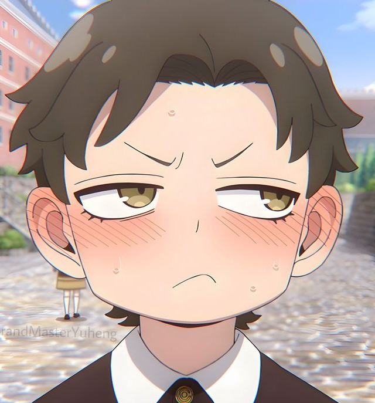
He is the second son of Donovan Desmond and Anya Forger's primary "target" for the Friendship Scheme in Spy x Family. While he starts the series as a typical schoolyard antagonist, he has evolved into one of the most sympathetic and nuanced characters in the story. Damian is the classic "haughty rich kid" with a hidden heart of gold. He initially appears arrogant, rude, and obsessed with his status as a Desmond. He looks down on "commoners" and demands respect from his peers. Most of his bravado is a defense mechanism. Deep down, he is incredibly hardworking, surprisingly honorable, and suffers from a massive inferiority complex regarding his perfect older brother and distant father. He feels he must become an Imperial Scholar to be "worthy" of the Desmond name. Every Stella Star he earns is not for his own pride, but a "ticket" to finally get his father to look at him. Damian serves as the emotional bridge for Operation Strix. Through Anya’s telepathy, the audience sees that Damian isn't a "villain" in the making, but a lonely child trying to survive the pressure of a broken family.